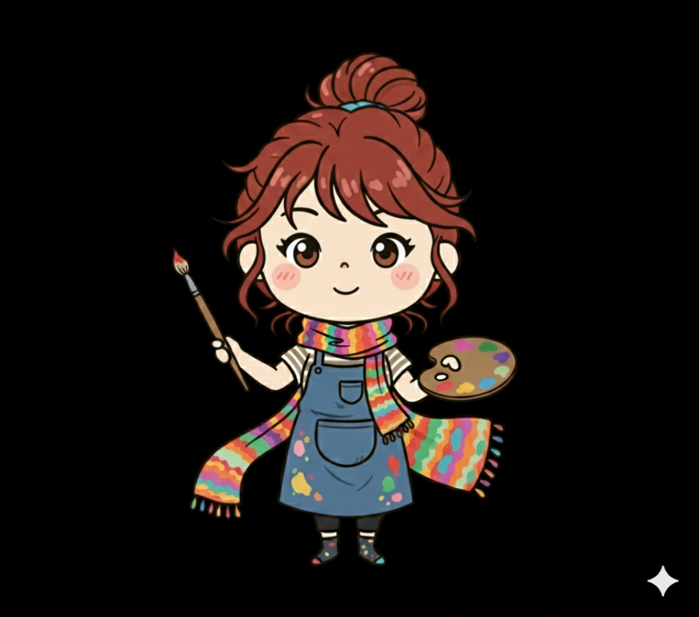

あなたの教師タイプを診断します。
あなたの指導の強みや隠れた才能が見つかるかも？
Teacher Type 16 教師のための16タイプ診断
Teacher Type 16とは
教師の指導スタイルを16パターンに分類してキャラクター化したものです。指導スタイルを構成する4つの軸の組み合わせによって、教師のタイプが16パターンに分かれています。
4つの軸と、その簡易的な説明は以下の通りです。
①重視するもの
規律と秩序か？主体と自由か？
Order or Autonomy
②指導の源泉
情熱か？論理か？
Passion or Logic
③生徒との距離感
近いか？遠いか？
Close or Distant
④指導の対象
個別か？集団か？
Individual or Group
自分、そして同僚の指導スタイルを知ることで「自分の指導の強みや課題は何か」「どのような教育環境で自分の力が発揮されやすいか」そして特に「どのようにバランスを取れば、より良い教育実践に繋がるのか」を考える指標となる教師診断になればと思っております。
16の教師タイプ一覧
OPCG
学園ドラマの熱血教師タイプ
OPCI
マンツーマンの熱血コーチタイプ

OPDG
勝利へ導く鬼顧問タイプ

OPDI
コンクールの個人指導教官タイプ
OLCG
対話で築くプロジェクトマネージャータイプ
OLCI
未来を照らす進路指導の先生タイプ

OLDG
学校のシステム管理者タイプ
OLDI
知の収蔵庫の学芸員タイプ

APCG
学校行事の仕掛け人タイプ
APCI

心の拠り所の保健室の先生タイプ
APDG
芸術系の自由人顧問タイプ
APDI
異能を見出すスカウトマンタイプ
ALCG
探求学習のファシリテータータイプ

ALCI
教育相談室のカウンセラータイプ
ALDG
知識の森の司書タイプ
ALDI
教育研究所の研究員タイプ
更新履歴
- 2025.09.25 - 試作版を公開。
- 2025.09.27 - 画像ファイルを一部変更。
- 2025.09.28 - 他のタイプとの相性を追加。
- 2025.09.29 - シェアボタンを追加。